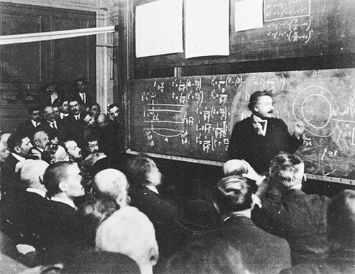

Einstein ở Paris, năm 1922
Có vẻ hiển nhiên là một ngày nào đó Einstein sẽ đoạt giải Nobel Vật lý. Thực tế, ông đã đồng ý chuyển số tiền thưởng cho người vợ đầu của mình là Mileva Marić khi việc đó diễn ra. Câu hỏi là: khi nào nó diễn ra và cho công trình gì?
Khi có thông báo vào tháng Mười một năm 1922 là ông sẽ được trao giải Nobel năm 1921, câu hỏi là: Cái gì đã khiến thời gian xét giải cho ông kéo dài đến vậy, và tại sao lại là “đặc biệt cho công trình phát minh định luật về hiệu ứng quang điện”?
Một chi tiết trong câu chuyện nổi tiếng này là Einstein biết cuối cùng mình cũng đoạt giải Nobel khi đang trên đường đến Nhật Bản. Bức điện gửi cho ông ngày 10 tháng Mười một viết: “Giải Nobel Vật lý đã được chọn trao cho anh. Sẽ nói thêm qua thư”. Thật ra, ông đã biết tin ngay khi Viện Hàn lâm Thụy Điển ra quyết định vào tháng Chín, trước khi ông thực hiện chuyến đi của mình.
Chủ tịch của ủy ban giải thưởng vật lý, Svante Arrhenius141, nghe nói Einstein dự định đi Nhật vào tháng Mười, điều đó có nghĩa là Einstein sẽ không thể tham dự buổi trao giải nếu ông không hoãn chuyến đi này. Vì vậy, ông ta trực tiếp viết thư cho Eintstein nói rõ: “Có lẽ anh sẽ rất mong đến Stockholm vào tháng Mười hai này.” Sau khi trình bày về nguyên lý vật lý của việc đi lại thời trước khi có máy bay, ông này nói thêm: “Và nếu anh ở Nhật vào thời điểm đó thì anh sẽ không tham dự được.” Được gửi từ người đứng đầu của Ủy ban Giải Nobel, thông điệp của bức thư khá rõ. Không có nhiều lý do khác để các nhà vật lý được triệu tập đến Stockholm vào tháng Mười hai.
Dù biết rằng cuối cùng mình cũng đoạt giải, song Einstein thấy không nên hoãn chuyến đi của mình. Một phần là ông đã bị bỏ qua thường xuyên đến mức ông bắt đầu bực mình với việc này.
Lần đầu ông được đề cử cho giải thưởng này là vào năm 1910 bởi người đoạt giải Nobel Hóa học, Wilhelm Ostwald, người 9 năm trước đã từ chối những lời khẩn cầu xin việc của Einstein. Ostwald trích dẫn Thuyết Tương đối hẹp, nhấn mạnh rằng lý thuyết này liên quan đến vật lý cơ bản và không phải là triết học đơn thuần như lập luận của một số người gièm pha Einstein. Đó là điều mà ông ta nhấn mạnh nhiều lần trong những năm sau đó khi tái đề cử Einstein.
Ủy ban Thụy Điển quan tâm đến chỉ thị trong di chúc của Alfred Nobel rằng giải thưởng này phải trao cho “phát minh hoặc sáng chế quan trọng nhất”, và họ thấy rằng Thuyết Tương đối không nằm trong hai trường hợp này. Vì vậy, Ủy ban báo cáo rằng họ cần chờ đợi thêm bằng chứng thực nghiệm “trước khi chấp nhận nguyên lý này và đặc biệt là trao giải Nobel cho nó”.
Einstein tiếp tục được đề cử cho công trình về Thuyết Tương đối trong suốt 10 năm sau đó, ông nhận được sự ủng hộ từ các nhà lý thuyết xuất sắc như Wilhelm Wien, dù vậy lại chưa nhận được sự ủng hộ của Lorentz, người khi đó vẫn còn hoài nghi. Trở ngại lớn nhất đối với ông là tại thời điểm đó Ủy ban này thiếu các nhà lý thuyết thuần túy. Ba trong số năm thành viên của Ủy ban trong suốt thời gian từ năm 1910 đến 1920 là những nhà thực nghiệm từ Đại học Uppsala của Thụy Điển, vốn nổi tiếng vì những cống hiến nhiệt thành cho việc hoàn chỉnh các kỹ thuật thực nghiệm và đo đạc. Robert Marc Friedman, một sử gia khoa học ở Oslo, viết: “Các nhà vật lý Thụy Điển với thiên kiến thực nghiệm mạnh mẽ chiếm đa số áp đảo ở Ủy ban này. Họ coi đo lường chính xác là mục tiêu cao nhất trong ngành nghiên cứu của mình.” Điều đó cho thấy vì sao Max Planck phải đợi đến năm 1919 (khi ông được trao giải thưởng đã bị hoãn trong năm 1918) còn Henri Poincaré chẳng bao giờ đoạt giải.
Lời công bố ấn tượng vào tháng Mười một năm 1919 rằng những kết quả quan sát nhật thực đã chứng thực các nội dung trong lý thuyết của Einstein đáng ra phải giúp cho ông nhận giải thưởng vào năm 1920. Đến lúc đó, Lorentz không còn hoài nghi nữa. Ông cùng Bohr và sáu người đề cử chính thức khác viết thư ủng hộ Einstein, hầu như tập trung đề cao Thuyết Tương đối hoàn chỉnh của ông. (Planck cũng viết ủng hộ ông, nhưng bức thư đó đến sau khi đã hết hạn xem xét). Như bức thư của Lorentz đã tuyên bố, Einstein “đã ở vị trí của những nhà vật lý hàng đầu của mọi thời đại”. Bức thư của Bohr cũng rõ ràng không kém: “Ở đây, ta phải đối mặt với sự tiến bộ có tầm quan trọng quyết định.”
Chính trị đã can thiệp. Cho đến khi đó, những lý lẽ chính nhằm từ chối trao giải Nobel cho Einstein đều mang tính khoa học: công trình của ông chỉ đơn thuần là lý thuyết, thiếu nền tảng thực nghiệm và nó được cho là không liên quan đến việc “khám phá” những định luật mới. Sau các quan sát nhật thực, việc giải thích sự dịch chuyển quỹ đạo của sao Thủy và các bằng chứng xác thực về mặt thực nghiệm khác, những lập luận chống lại Einstein vẫn còn nhưng giờ đây chúng chỉ đầy những thành kiến cá nhân và văn hóa. Đối với những người chỉ trích ông, việc ông bỗng nhiên đạt địa vị siêu sao như là nhà khoa học nổi tiếng nhất thế giới kể từ khi người thuần phục tia sét, Benjamin Franklin được tiếp đón bằng một cuộc diễu hành trên đường phố Paris là bằng chứng cho thấy thói tự quảng bá của ông, hơn là việc ông xứng đáng nhận giải Nobel.
Ý phụ này được thể hiện rõ trong bản báo cáo nội bộ dài bảy trang do Arrhenius, Chủ tịch Ủy ban, chuẩn bị, trong đó giải thích lý do không nên trao cho Einstein giải thưởng năm 1920. Ông ta viết rằng các kết quả nhật thực bị phê bình là mơ hồ, và các nhà khoa học vẫn chưa chứng thực được dự đoán của lý thuyết này là ánh sáng đến từ Mặt trời sẽ dịch chuyển về phía đầu đỏ của phổ do lực hấp dẫn của Mặt trời. Ông ta cũng trích phần lập luận nhiều điều tiếng của Ernst Gehrcke, một trong những người chống Thuyết Tương đối, bài Do Thái, người tổ chức cuộc tụ họp khét tiếng phản đối Einstein vào mùa hè năm đó ở Berlin, cho rằng sự thay đổi quỹ đạo của sao Thủy có thể được giải thích bằng các lý thuyết khác.
Phía sau hậu trường, một nhà phê bình bài Do Thái hàng đầu khác là Philipp Lenard cũng đang bắt đầu một chiến dịch chống lại Einstein. (Năm sau đó, Lenard đã đề xuất Gehrcke cho giải thưởng này!) Sven Hedin, một nhà thám hiểm người Thụy Điển và là thành viên nổi bật của Viện Hàn lâm, về sau nhớ lại rằng Lenard đã cố gắng thuyết phục ông và những người khác rằng “Thuyết Tương đối không thật sự là một phát kiến,” và nó vẫn chưa được chứng minh.
Báo cáo của Arrhenius trích “lời phê bình mạnh mẽ [của Lenard] về những điều kỳ quặc trong Thuyết Tương đối tổng quát hóa của Einstein”. Quan điểm của Lenard được diễn tả lại như là sự phê bình một lý thuyết vật lý không đặt cơ sở trên các thí nghiệm và các phát minh cụ thể. Nhưng trong báo cáo này có một khuynh hướng ngầm cho thấy sự thù ghét của Lenard đối với kiểu “phỏng đoán triết học” mà ông ta thường gạt đi và cho là một đặc trưng của “khoa học Do Thái”.
Vì vậy, giải thưởng năm 1920 đã thuộc về một cựu sinh viên trường Bách khoa Zurich, đối thủ khoa học của Einstein, Charles–Edouard Guillaume142, Giám đốc Văn phòng Cân đo Quốc tế, người để lại dấu ấn khiêm tốn lên khoa học bằng việc đảm bảo rằng các cách đo chuẩn thì chính xác và phát hiện những hợp kim có nhiều ứng dụng thực tế, trong đó có việc việc làm ra những thanh đo tốt. “Khi mà thế giới vật lý đã bước vào cuộc phiêu lưu tri thức với tỷ lệ phi thường, quả thật đặc biệt khi nhìn vào sự công nhận những thành tựu của Guillaume, dựa trên nghiên cứu thông thường và sự tinh chỉnh lý thuyết khiêm tốn, như một cột mốc. Ngay cả những người phản đối Thuyết Tương đối cũng thấy Guillaume là một lựa chọn lạ lùng,” Friedman viết.
Đến năm 1921, cơn cuồng Einstein của công chúng, dù xấu hay tốt, đã đạt đến độ gây áp lực tối đa, và có sự đồng tình ủng hộ ông từ cả phía các nhà lý thuyết lẫn phía các nhà thực nghiệm, từ những người Đức như Planck cũng như những ai không phải người Đức như Eddington. Ông nhận được 14 đề cử chính thức, nhiều hơn bất kỳ đối thủ nào khác. “Einstein vượt lên trên những người đồng thời với mình, thậm chí được xem là ngang bằng với Newton,” Eddington viết, dành cho Einstein lời khen ngợi cao nhất mà một thành viên của Hội Hoàng gia có thể có.
Lần này Ủy ban Giải Nobel giao công việc làm báo cáo về Thuyết Tương đối cho Allvar Gullstrand143, một Giáo sư nhãn khoa tại Đại học Uppsala, người đã đoạt giải Nobel Y học năm 1911. Với kiến thức chuyên môn ít ỏi về cả về toán học và vật lý của Thuyết Tương đối, ông này đã phê bình Thuyết Tương đối của Einstein theo lối sắc cạnh nhưng thật ra chẳng biết gì. Với quyết tâm rõ ràng là hạ bệ Einstein bằng mọi giá, chẳng hạn, bản báo cáo dài 50 trang của Gullstrand tuyên bố, sự bẻ cong ánh sáng không phải là một sự kiểm tra thực sự cho lý thuyết của Einstein, rằng các kết quả thu được không có giá trị về mặt thực nghiệm, và rằng dù chúng có giá trị đi chăng nữa, thì vẫn có những cách khác để giải thích hiện tượng này khi dùng cơ học cổ điển. Về quỹ đạo của sao Thủy, ông ta tuyên bố: “Cho đến khi có thêm bằng chứng thì hiện vẫn chưa rõ liệu lý thuyết của Einstein có nhất quán với kết quả khảo sát điểm cận nhật hay không.” Còn các hiệu ứng của Thuyết Tương đối hẹp, theo ông ta, “nằm dưới giới hạn của sai số thực nghiệm”. Là một người gây dựng tên tuổi qua việc thiết kế các dụng cụ đo quang học chính xác, Gullstrand dường như đặc biệt kinh hãi trước lý thuyết của Einstein cho rằng độ dài của một thanh đo rắn chắc có thể thay đổi trong quan hệ tương đối với những người quan sát chuyển động.
Mặc dù một số thành viên của Viện Hàn lâm nhận ra lý lẽ phản đối của Gullstrand không có gì phức tạp, nhưng vượt qua nó là việc không dễ dàng. Gullstrand là một giáo sư người Thụy Điển nổi tiếng, rất được trọng vọng, và ông ta quả quyết cả công khai lẫn kín rằng không nên trao vinh dự to lớn của giải Nobel cho một lý thuyết nặng tính phỏng đoán, đang là đối tượng của một cơn kích động tập thể không thể hiểu nổi, mà chẳng chóng thì chầy sẽ xẹp ngay. Thay vì chọn một người khác, Viện Hàn lâm làm một việc đỡ giống (hoặc cũng có thể là giống) một cái tát công khai vào Einstein hơn. Họ không chọn ai và ngập ngừng lùi giải thưởng năm 1921 sang năm khác.
Sự bế tắc này đe dọa trở thành một việc đáng xấu hổ. Việc Einstein không được trao giải bắt đầu phản ánh một cách tiêu cực lên giải Nobel, hơn là lên Einstein. Trong bức thư đề cử năm 1922, nhà vật lý người Pháp Marcel Brillouin144 đã viết: “Các vị hãy dành một lúc tưởng tượng xem ý kiến chung trong 50 năm tới sẽ như thế nào nếu như cái tên Einstein không xuất hiện trong danh sách những người nhận giải Nobel.”
Vị cứu tinh đã xuất hiện, đó là nhà vật lý lý thuyết của Đại học Uppsala, Carl Wilhelm Oseen145, người gia nhập Ủy ban năm 1922. Ông là đồng nghiệp và là bạn của Gullstrand, điều này giúp ông dễ dàng vượt qua những lý lẽ phản đối sai lệch và ngoan cố của vị bác sỹ nhãn khoa. Ông nhận ra rằng toàn bộ vấn đề Thuyết Tương đối đã được bao lại bằng một vỏ ngoài dày đặc những cuộc tranh cãi đến độ tốt hơn là nên thử một chiến thuật mới. Vì vậy, Oseen nỗ lực thúc đẩy trao giải cho Einstein vì đã “phát minh định luật hiệu ứng quang điện”.
Mỗi phần trong cụm từ này đều được tính kỹ. Hẳn nhiên, nó không phải là đề cử cho Thuyết Tương đối. Trên thực tế, dù được một số sử gia diễn giải lại, đây không phải là đề cử cho lý thuyết lượng tử ánh sáng, mặc dù thuyết này là trọng tâm trong bài báo có liên quan được công bố năm 1905 của Einstein. Nó cũng không phải đề cử xét giải cho bất cứ lý thuyếtnào. Đây chỉ là đề cử cho công phát minh một định luật.
Một báo cáo từ năm trước đó đã bàn về “lý thuyết hiệu ứng quang điện” của Einstein, nhưng Oseen nêu rõ tiếp cận khác biệt của mình bằng nhan đề báo cáo: “Định luật về hiệu ứng quang điện của Einstein” (phần chữ in nghiêng là do tác giả nhấn mạnh). Trong báo cáo này, Oseen không chú trọng đến các khía cạnh lý thuyết trong công trình của Einstein. Thay vào đó, ông cụ thể hóa cái mà ông gọi là định luật tự nhiên cơ bản được Einstein đề xuất và đã được chứng minh đầy đủ bằng thí nghiệm: một mô tả toán học về việc hiệu ứng quang điện có thể được giải thích ra sao với giả định rằng ánh sáng bị hấp thu và phát ra theo những lượng tử gián đoạn, và nó liên quan như thế nào đến tần số ánh sáng.
Oseen cũng đề xuất rằng việc trao cho Einstein giải thưởng bị hoãn từ năm 1921 sẽ cho phép Viện Hàn lâm lấy đó làm cơ sở để đồng thời trao cho Niels Bohr giải thưởng năm 1922, vì mô hình nguyên tử của ông này dựa trên các định luật giải thích hiệu ứng quang điện. Đó là tấm vé đôi thông minh đảm bảo rằng cả hai nhà vật lý lý thuyết vĩ đại nhất của thời đại đều nhận giải Nobel mà không gây tổn hại đến nguyên tắc lâu đời của Viện Hàn lâm. Gullstrand đồng ý. Arrhenius, người đã gặp Einstein tại Berlin và bị cuốn hút, giờ cũng sẵn sàng chấp nhận điều không thể tránh khỏi. Ngày 6 tháng Chín năm 1922, Viện Hàn lâm bỏ phiếu, Einstein và Bohr lần lượt nhận được giải Nobel Vật lý năm 1921 và 1922.
Như vậy, Einstein trở thành người nhận giải thưởng Nobel năm 1921, như thông báo chính thức sau, “vì công lao của ông đối với ngành vật lý lý thuyết và đặc biệt cho việc phát minh định luật hiệu ứng quang điện”. Trong cả thông báo và bức thư của thư ký Viện Hàn lâm thông báo chính thức cho Einstein, một thông tin bất thường rõ ràng đã được thêm vào. Cả hai tài liệu này đều nêu rõ, giải thưởng được trao “không tính đến giá trị dành cho các Thuyết Tương đối và lý thuyết hấp dẫn của ông sau khi chúng được chứng thực trong tương lai”. Hóa ra, Einstein không đoạt giải Nobel cho công trình về Thuyết Tương đối và lý thuyết hấp dẫn, cũng không cho bất cứ cái gì khác ngoài hiệu ứng quang điện.
Có một sự trớ trêu khó hiểu trong việc dùng hiệu ứng quang điện làm con đường cho Einstein đến với giải Nobel. “Định luật” của ông chủ yếu dựa trên các quan sát của Philipp Lenard, người đã vận động quyết liệt nhất để bỏ phiếu chống ông. Trong bài báo năm 1905, Einstein đã khen ngợi công trình “tiên phong” của Lenard. Nhưng sau cuộc tụ họp của những người chủ chương bài Do Thái năm 1920 ở Berlin, họ trở thành những kẻ thù gay gắt. Vì vậy, Lenard tức giận gấp đôi rằng, bất chấp sự phản đối của ông ta, Einstein vẫn được trao giải thưởng, và còn tệ hơn nữa là được giải trong lĩnh vực mà chính Lenard đi tiên phong. Ông ta viết một bức thư giận dữ gửi Viện Hàn lâm, đây là lời phản đối chính thức duy nhất mà họ nhận được, trong đó nói rằng Einstein hiểu lầm bản chất thật sự của ánh sáng, và còn là một gã Do Thái tìm kiếm sự nổi tiếng, có phương pháp xa lạ với tinh thần thật sự của nền vật lý Đức.
Einstein đi tàu tới Nhật và bỏ lỡ lễ trao giải chính thức diễn ra vào ngày 10 tháng Mười hai. Sau nhiều tranh cãi về việc liệu nên xem ông là người Đức hay người Thụy Sĩ, giải thưởng này được Đại sứ Đức chấp nhận, nhưng ông được ghi hai quốc tịch trong hồ sơ chính thức.
Bài phát biểu chính thức của Arrhenius, Chủ tịch Ủy ban, được viết cẩn thận. Mở đầu như sau: “Có lẽ không nhà vật lý nào còn sống hiện nay mà tên tuổi được biết đến rộng rãi như Einstein. Phần lớn các thảo luận tập trung vào Thuyết Tương đối của ông.” Sau đó, ông ta tiếp tục nói gần như tùy tiện rằng “về cơ bản vấn đề đó gắn liền với nhận thức luận, và do đó đã trở thành chủ đề của cuộc tranh luận sôi nổi trong giới triết học”.
Sau khi đề cập ngắn gọn đến công trình khác của Einstein, Arrhenius giải thích lập trường của Viện Hàn lâm về việc tại sao Einstein lại được trao giải. Ông nói: “Định luật của Einstein về hiệu ứng quang điện đã được nhà khoa học Millikan146 người Mỹ và các học trò của ông kiểm tra một cách cực kỳ nghiêm ngặt, và đã được chứng tỏ là đúng. Định luật của Einstein đã trở thành nền tảng cho ngành quang hóa học định lượng tương tự như định luật của Faraday là cơ sở của ngành điện hóa học.”
Einstein trình bày diễn từ nhận giải chính thức vào tháng Bảy năm sau đó tại một hội nghị khoa học ở Thụy Điển với sự tham dự của vua Gustav Adolf V147. Ông không chỉ phát biểu về hiệu ứng quang điện mà còn về Thuyết Tương đối, và ông kết thúc diễn từ bằng việc nhấn mạnh tầm quan trọng của niềm đam mê mới trong ông, đó là tìm ra một lý thuyết trường thống nhất hợp nhất Thuyết Tương đối rộng với lý thuyết điện từ và cơ học lượng tử nếu có thể.
Giải thưởng năm đó lên tới 121.572 kronor Thụy Điển, tương đương với 32.250 USD, cao gấp 10 lần mức lương hằng năm của một giáo sư bình thường vào thời điểm đó. Theo thỏa thuận ly dị với Marić, Einstein gửi trực tiếp một phần giải thưởng tới một quỹ tín thác ở Zurich cho bà và các con, số còn lại được gửi vào một tài khoản tại ngân hàng Mỹ với phần lãi suất được chuyển trực tiếp cho bà.
Việc này lại gây ra một vấn đề khác. Hans Albert phàn nàn rằng thỏa thuận với quỹ tín thác, trước đó đã được các bên đồng ý, chỉ cho gia đình được rút số tiền lãi. Một lần nữa Zangger lại đứng ra can thiệp và làm dịu tranh chấp. Einstein viết đùa cho bọn trẻ: “Các con sẽ giàu đến mức một ngày nào đó có thể cha sẽ phải hỏi vay tiền các con đấy.” Cuối cùng, số tiền này đã được Marić dùng để mua ba ngôi nhà có căn hộ cho thuê ở Zurich.
Sau khi hoàn tất công trình về Thuyết Tương đối rộng và vũ trụ học, Einstein than vãn với một người bạn: “Người ta chỉ có thể nghĩ ra được những điều mới mẻ khi còn trẻ. Sau đó, người ta trở nên kinh nghiệm hơn, nổi tiếng hơn và đầu óc tắc tị hơn.”
Einstein bước sang tuổi 40 vào năm 1919, năm mà các quan sát nhật thực làm ông nổi tiếng toàn thế giới. Trong sáu năm sau đó, ông tiếp tục có những cống hiến quan trọng cho lý thuyết lượng tử. Nhưng sau đó, như chúng ta sẽ thấy, dường như ông bắt đầu, nếu không phải là tắc tị hơn, thì chí ít cũng là có chút bảo thủ khi phản đối cơ học lượng tử và bắt tay vào một nỗ lực lâu dài, lẻ loi và không thành công là đưa ra một lý thuyết thống nhất gộp nó vào một phạm vi mang tính tất định hơn.
Trong những năm tiếp theo đó, các nhà nghiên cứu sẽ phát hiện các lực mới trong tự nhiên, ngoài lực điện từ và lực hấp dẫn, cùng các hạt mới. Những phát hiện này sẽ làm nỗ lực thống nhất của Einstein phức tạp hơn nhiều. Và rồi ông sẽ thấy mình không còn quen thuộc với những dữ liệu mới nhất trong vật lý thực nghiệm như trước nữa, do vậy ông không còn có được cái trực giác để làm sao moi từ tự nhiên những nguyên lý cơ bản của nó.
Nếu Einstein nghỉ hưu sau khi các quan sát nhật thực được công bố và dành toàn bộ tâm trí cho việc đi thuyền trong suốt 36 năm còn lại của cuộc đời thì khoa học có chịu tổn thất không? Có. Vì dù phần lớn những công kích của ông đối với cơ học lượng tử không đủ căn cứ, song ông đã góp phần củng cố lý thuyết này bằng cách đưa ra một số bước tiến và cũng, một cách ít chủ ý hơn, bằng những nỗ lực tài tình nhưng vô ích nhằm chọc những lỗ hổng trong đó.
Điều đó đặt ra câu hỏi khác: Tại sao trước giai đoạn 40 tuổi Einstein lại sáng tạo hơn nhiều so với giai đoạn sau đó. Một phần là vì các nhà toán học và vật lý lý thuyết phải chịu một rủi ro nghề nghiệp khi có bước đột phá vĩ đại trước khi bước sang độ tuổi 40. Einstein giải thích với một người bạn: “Nhà trí thức đã phế rồi nhưng danh tiếng rực rỡ vẫn bao quanh lớp vỏ đã hóa vôi.”
Cụ thể hơn, các thành công khoa học của Einstein một phần nhờ sự nổi loạn của ông. Có một mối liên kết giữa óc sáng tạo của ông và tinh thần sẵn sàng thách thức quyền uy. Ông không có sự gắn bó tình cảm với trật tự cũ và có năng lượng để lật đổ nó. Sự cứng đầu có lợi cho ông.
Nhưng lúc này, cũng như việc ông đã đánh đổi những thái độ sống nổi loạn của thời trai trẻ lấy những tiện nghi của một gia đình tư sản trung lưu, ông gắn mình với niềm tin rằng các lý thuyết trường có thể bảo toàn những cái chắc chắn và tính tất định của khoa học cổ điển. Từ đó trở đi, sự ngoan cố lại gây hại cho ông.
Nó là một định mệnh mà ông đã bắt đầu lo sợ từ nhiều năm trước đó, không lâu sau khi hoàn thành loạt bài báo nổi tiếng năm 1905. Ông bày tỏ nỗi lo lắng đó với Maurice Solovine, một đồng nghiệp trong Hội nghiên cứu Olympia: “Chẳng mấy chốc tôi sẽ sớm bước vào giai đoạn trì trệ và cằn cỗi, lúc mà ta khóc than cho tinh thần cách mạng của tuổi trẻ.”
Lúc này, sau nhiều thắng lợi, có những nhà cách mạng trẻ tuổi cảm thấy định mệnh này quả thật đã khuất phục được ông. Trong một nhận xét hé mở nhiều điều nhất về bản thân, Einstein than vãn: “Để trừng phạt tôi vì dám xem thường kẻ có quyền uy, định mệnh đã bắt tôi trở thành kẻ có quyền uy.”
Vì vậy, không có gì lạ khi trong những năm 1920, Einstein thấy mình rút lại những ý tưởng mạnh bạo trước đây. Chẳng hạn, trong bài báo về Thuyết Tương đối hẹp năm 1905, ông đã tài tình gạt bỏ khái niệm ê-te, cho nó là “thừa thãi”. Nhưng sau khi hoàn thành Thuyết Tương đối rộng, ông kết luận rằng các thế hấp dẫn trong lý thuyết đó đặc trưng cho các tính chất vật lý của không gian trống rỗng và đóng vai trò như là môi trường có thể truyền nhiễu loạn. Ông bắt đầu đề cập đến điều này như là một cách mới để hiểu ê-te. Ông viết cho Lorentz năm 1916: “Tôi đồng ý với ông rằng Thuyết Tương đối rộng thừa nhận giả thuyết về ê-te.”
Trong một bài giảng ở Leiden vào tháng Năm năm 1920, Einstein công khai đề xuất một sự hóa thân, chứ không phải một sự tái sinh của ê-te. “Tuy nhiên, việc suy ngẫm kỹ lưỡng hơn cho chúng ta thấy rằng Thuyết Tương đối hẹp không buộc chúng ta phải phủ nhận ê-te,” ông nói. “Chúng ta có thể giả định sự tồn tại của một chất ê-te, chỉ có điều là chúng ta phải từ bỏ việc gán một trạng thái chuyển động xác định cho nó.”
Ông cho biết, quan điểm sửa đổi này được biện minh bằng các kết quả của Thuyết Tương đối rộng. Ông nói rõ rằng ê-te mới của ông khác với ê-te cũ từng được xem như một môi trường có thể tạo sóng và do đó giải thích cách thức sóng ánh sáng chuyển động trong không gian. Thay vào đó, ông giới thiệu lại ý tưởng này để giải thích chuyển động quay và quán tính.
Có lẽ ông sẽ tránh tạo ra phần nào sự khó hiểu nếu ông chọn một thuật ngữ khác. Nhưng trong bài phát biểu của mình, ông nói rõ rằng ông dùng lại từ này một cách có chủ ý:
Xét đến cùng thì phủ nhận ê-te là giả định rằng không gian trống rỗng không mang tính chất vật lý nào. Các thực tế khách quan cơ bản của cơ học không hòa hợp với quan điểm này… Ngoài những đối tượng quan sát được, một cái khác, vốn không tri giác được, phải được nhìn nhận là có thực, để có thể làm cho gia tốc hay sự quay được nhìn nhận như cái gì đó có thực... Quan niệm về ê-te một lần nữa có được một nội dung có thể hiểu được, dù nội dung này khác xa nội dung của ê-te trong lý thuyết sóng cơ về ánh sáng… Theo Thuyết Tương đối rộng, không gian mang các tính chất vật lý; theo nghĩa này, tồn tại một chất ê-te. Thật khó có thể nghĩ ra một không gian không có ê-te; vì trong không gian như thế, ánh sáng không chỉ không truyền được, mà còn không hề tồn tại các tiêu chuẩn cho không gian và thời gian (các thanh đo và đồng hồ), cũng không có các khoảng không – thời gian theo nghĩa vật lý. Nhưng ta không thể xem chất ê-te này mang các tính chất của một môi trường đo lường được, như là gồm các thành phần có thể theo dõi theo thời gian. Ý tưởng về chuyển động này có thể không đúng với nó.
Vậy ê-te được hóa thân này là gì, và nó mang ý nghĩa gì đối với nguyên lý của Mach và câu hỏi mà cái xô của Newton đặt ra?148 Ban đầu Einstein cho rằng Thuyết Tương đối rộng giải thích chuyển động quay là chuyển động chỉ là một chuyển động tương đối so với các vật khác trong không gian như Mach đã lập luận. Nói cách khác, nếu bạn ở trong một cái xô đang đung đưa trong không gian trống rỗng, mà chẳng có vật thể nào khác trong vũ trụ, thì khi đó không có cách nào để nói rằng bạn có quay tròn hay không. Einstein thậm chí còn viết thư cho Mach nói rằng ông nên vui với việc nguyên lý của mình được Thuyết Tương đối rộng ủng hộ.
Einstein cũng khẳng định tuyên bố này trong một bức thư gửi Schwarzschild, nhà khoa học trẻ tuổi, tài giỏi đã viết thư cho ông từ mặt trận của Đức tại Nga trong thời chiến tranh về các hệ quả vũ trụ học của Thuyết Tương đối. Einstein tuyên bố: “Quán tính đơn thuần chỉ là một tương tác giữa các khối lượng, chứ không phải là một hiệu ứng trong đó ‘không gian’ của chính nó có liên quan, tách biệt khỏi khối lượng được quan sát.” Nhưng Schwarzschild không đồng ý với đánh giá đó.
Và giờ, bốn năm sau, Einstein đã thay đổi suy nghĩ. Trong bài phát biểu tại Leiden, không giống như diễn giải năm 1916 của mình về Thuyết Tương đối rộng, Einstein chấp nhận rằng lý thuyết trường hấp dẫn của ông có hàm ý không gian trống rỗng có những tính chất vật lý. Hành vi cơ học của một vật thể bay trong không gian trống rỗng, giống như cái xô của Newton, “không chỉ phụ thuộc vào vận tốc tương đối mà còn phụ thuộc vào trạng thái quay của nó. Và điều đó có nghĩa rằng “không gian có tính chất vật lý”.
Như ông thẳng thắn thừa nhận, điều đó có nghĩa là ông đang từ bỏ nguyên lý Mach. Ngoài nhiều điều khác, quan điểm của Mach cho rằng quán tính là do sự tồn tại của các vật thể từ xa trong vũ trụ gây ra, ngụ ý rằng những vật thể này có thể lập tức có ảnh hưởng lên một vật, mặc dù chúng cách xa nhau. Thuyết Tương đối của Einstein không chấp nhận những tác động tức thời từ xa. Thậm chí lực hấp dẫn cũng không tác động lực tức thời, mà chỉ tác động thông qua những thay đổi trong trường hấp dẫn và bị giới hạn bởi vận tốc ánh sáng. Einstein nói: “Sức cản quán tính đối với gia tốc liên quan tới các vật thể cách xa nhau đòi hỏi tác động từ xa. Vì nhà vật lý hiện đại không chấp nhận những thứ như tác động từ xa, nên ông trở lại với ê-te, chất có tác dụng như là môi trường cho các hiệu ứng quán tính.”
Đó là vấn đề vẫn còn gây tranh cãi, nhưng có vẻ Einstein, chí ít là khi giảng tại Leiden, đã tin rằng theo Thuyết Tương đối rộng mà ông nhìn nhận lúc này, nước trong chiếc xô của Newton sẽ được đẩy lên thành xô ngay cả khi nó quay tròn trong một vũ trụ không có bất cứ vật thể nào khác. Brian Greene viết: “Trái với dự đoán của Mach, thậm chí trong một vũ trụ trống rỗng khác, bạn sẽ cảm thấy bị ép vào thành bên trong của chiếc xô quay tròn…. Trong Thuyết Tương đối rộng, không – thời gian trống rỗng cung cấp một điểm chuẩn cho chuyển động có gia tốc.”
Việc quán tính đẩy nước lên thành xô là do chuyển động quay tương đối so với trường metric mà lúc đó Einstein gọi là ê-te gây ra. Kết quả là ông phải đối mặt với khả năng Thuyết Tương đối rộng có thể không nhất thiết loại trừ khái niệm chuyển động tuyệt đối, chí ít là so với metric của không – thời gian.
Đó không hẳn là sự rút lui, cũng không phải là sự trở lại với khái niệm ê-te của thế kỷ XIX. Nhưng đó là một cách nhìn nhận bảo thủ hơn về vũ trụ, nó cũng biểu thị sự tách rời của Einstein khỏi chủ nghĩa cấp tiến của Mach mà ông từng theo đuổi.
Điều này rõ ràng khiến Einstein thấy không thoải mái. Cách hay nhất để loại bỏ sự cần thiết phải có một chất ê-te tồn tại riêng biệt đối với vật chất, ông kết luận, là tìm ra một lý thuyết trường thống nhất khó hiểu. Đó sẽ là vinh quang to lớn biết bao! Ông nói: “Sự tương phản giữa ê-te và vật chất sẽ tan biến, và qua Thuyết Tương đối rộng, toàn bộ nền vật lý sẽ trở thành một hệ thống tư duy hoàn chỉnh.”
Biểu hiện quan trọng nhất cho cuộc chuyển biến thời trung niên của Einstein từ một con người cách mạng trở thành một người bảo thủ là thái độ cứng rắn của ông đối với lý thuyết lượng tử, lý thuyết đã tạo ra một hệ thống cơ học mới cấp tiến từ giữa những năm 1920. Những lo ngại của ông về cơ học lượng tử mới này và cuộc tìm kiếm một lý thuyết thống nhất hòa hợp cơ học lượng tử với Thuyết Tương đối, cũng như khôi phục tính tất định cho tự nhiên, đã chi phối, và theo nghĩa nào đó gây ảnh hưởng không tốt, nửa sau sự nghiệp khoa học của ông.
Ông từng là một người tiên phong không hề biết sợ hãi trong lĩnh vực lượng tử. Cùng với Max Planck, ông đã khơi mào cho cuộc cách mạng đầu thế kỷ XX. Không giống như Planck, ông là một trong số ít những nhà khoa học thực sự tin vào tính thực tại vật lý của lượng tử – rằng ánh sáng quả thật xuất hiện dưới dạng các bó năng lượng. Những lượng tử này có khi hoạt động như các hạt. Chúng là những đơn vị bất khả phân, chứ không phải là một phần của một thể liền lạc.
Trong bài phát biểu năm 1909 ở Salzburg, ông dự đoán rằng vật lý phải hòa hợp chính nó với tính hai mặt, theo đó ánh sáng có thể được nhìn nhận như là cả sóng và hạt. Tại hội nghị Solvay đầu tiên được tổ chức năm 1911, ông tuyên bố “những tính gián đoạn khiến chúng ta không đồng ý trong lý thuyết của Planck dường như thật sự tồn tại trong tự nhiên”.
Điều này khiến Planck, người phản đối quan niệm cho rằng lượng tử của ông thật sự có một thực tại vật lý, đã nói như sau về Einstein trong bức thư đề cử Einstein được bầu vào Viện Hàn lâm Phổ: “Giả thuyết về lượng tử ánh sáng của anh ta có thể đã đi quá xa.” Tương tự, cũng có nhiều nhà khoa học khác phản đối giả thuyết lượng tử của Einstein. Walther Nernst cho nó “có lẽ là điều quái đản nhất từng được nghĩ ra,” còn Robert Millikan gọi giả thuyết đó là “hoàn toàn không thể đứng vững” ngay cả sau khi đã xác nhận khả năng dự đoán của nó trong phòng thí nghiệm của mình.
Một giai đoạn mới của cuộc cách mạng lượng tử được phát động năm 1913 khi Niels Bohr đưa ra mô hình cấu trúc nguyên tử sửa đổi. Kém Einstein sáu tuổi, tài giỏi nhưng khá nhút nhát và không giỏi ăn nói, Bohr là người Đan Mạch, nhờ đó ông có thể rút ra từ công trình về lý thuyết lượng tử được những người Đức như Planck và Einstein thực hiện cũng như từ các công trình về cấu trúc nguyên tử được các nhà khoa học người Anh J. J. Thomson và Ernest Rutherford đưa ra. Arthur Eddington nhớ lại: “Khi đó, lý thuyết lượng tử là một phát minh của người Đức, và nó hiếm khi len được vào nước Anh.”
Bohr theo học Thomson ở Cambridge. Nhưng có vấn đề trong giao tiếp giữa cậu học trò người Đan Mạch chỉ nói lầm bầm và ông thầy người Anh lỗ mãng. Vì vậy, Bohr chuyển sang Manchester làm việc với ông thầy Rutherford có tính ưa giao du, Rutherford đã đưa ra một mô hình nguyên tử mô tả một hạt nhân có điện tích dương với các electron mang điện tích âm xoay quanh.
Bohr điều chỉnh lại mô hình này dựa trên thực tế các electron này không suy sụp vào hạt nhân và phát ra một phổ bức xạ liên tục như vật lý cổ điển đề xuất. Trong mô hình mới của Bohr, mô hình dựa trên nghiên cứu nguyên tử hydro, electronxoay quanh hạt nhân theo một số quỹ đạo được phép nhất định trong những trạng thái có năng lượng gián đoạn. Nguyên tử này chỉ có thể hấp thu năng lượng từ bức xạ (chẳng hạn ánh sáng) theo những lượng mà có thể đẩy electron lên một bậc tới một quỹ đạo được phép khác. Tương tự, nguyên tử này chỉ có thể phát bức xạ theo những lượng mà có thể kéoelectron xuống một quỹ đạo được phép khác.
Khi một electron chuyển từ quỹ đạo này sang quỹ đạo khác thì đó là một bước nhảy lượng tử. Nói cách khác, đó là một sự chuyển dịch ngắt quãng và không liên tục từ một mức này sang một mức khác mà không có điểm trung chuyển. Bohr tiếp tục chỉ ra cách mô hình này có thể giải thích các vạch trong phổ ánh sáng phát ra từ nguyên tử hydro.
Einstein vừa ấn tượng vừa hơi ghen tị khi ông nghe nói về lý thuyết của Bohr. Như một nhà khoa học nói lại với Rutherford: “Anh ta nói với tôi rằng anh ta từng có ý tưởng tương tự nhưng không dám công bố chúng.” Sau này Einstein nói rõ hơn về phát hiện của Bohr: “Đây là dạng thức cao nhất của tính nhạc trong lĩnh vực tư duy.”
Einstein đã sử dụng mô hình của Bohr làm nền móng cho một loạt bài báo vào năm 1916, bài quan trọng nhất trong số này, “Về lý thuyết lượng tử bức xạ” được công bố chính thức trong một tạp chí năm 1917.
Einstein bắt đầu bằng một thí nghiệm tưởng tượng về một căn phòng chứa đầy đám mây nguyên tử. Chúng chìm ngập trong ánh sáng (hoặc bất cứ dạng bức xạ điện từ nào). Sau đó, Einstein kết hợp mô hình nguyên tử của Bohr với lý thuyết lượng tử của Planck. Nếu mỗi thay đổi trong quỹ đạo electron tương ứng với sự hấp thu hoặc phát ra một lượng tử ánh sáng, thì – rất nhanh! – nó sẽ dẫn đến một cách rút ra công thức Plank mới hơn và hay hơn để giải thích bức xạ vật đen. Như Einstein từng khoe với Michele Besso: “Một ý tưởng lóe lên trong đầu tôi về sự hấp thu và phát xạ. Nó sẽ làm anh thích thú đấy. Một cách đơn giản đến ngạc nhiên để đi đến công thức, ý tôi là công thức Planck ấy. Vấn đề được lượng tử hóa hoàn toàn.”
Nguyên tử phát xạ theo lối tự phát, nhưng Einstein lại đưa ra giả thuyết rằng người ta cũng có thể kích thích quá trình này. Một cách đơn giản để hình dung ra điều này là giả sử rằng một nguyên tử đã ở trạng thái năng lượng cao nhờ hấp thụ một photon. Nếu sau đó một photon khác có một bước sóng nhất định được bắn vào, hai photon có cùng bước sóng và cùng hướng có thể phát ra.
Điều Einstein phát hiện phức tạp hơn một chút. Giả sử có một lượng chất khí gồm các nguyên tử có năng lượng được bơm vào trong chất khí này bằng xung điện hoặc ánh sáng. Nhiều nguyên tử sẽ hấp thu năng lượng và chuyển sang trạng thái năng lượng cao hơn, và chúng sẽ bắt đầu phát ra photon. Einstein lập luận rằng sự hiện diện của đám mây photoncho thấy rõ hơn rằng những photon có cùng bước sóng và hướng như các photon khác trong đám mây sẽ phát ra. Gần 40 năm sau, quá trình phát xạ bị kích thích này sẽ là cơ sở cho việc phát minh ra tia la-de (laser), một từ viết tắt của cụm từ “khuếch đại ánh sáng bằng phát xạ kích thích” [light amplification by the stimulated emission of radiation].
Lý thuyết lượng tử về phát xạ của Einstein có những phân nhánh kỳ lạ. Ông nói với Besso: “Người ta có thể chứng minh một cách thuyết phục rằng những quá trình phát ra và hấp thu ban đầu là quá trình có định hướng.” Nói cách khác, khi một photon thoát ra khỏi nguyên tử, nó không lập tức phát ra theo mọi hướng (như giả thuyết của lý thuyết sóng cổ điển). Thay vào đó, photon có động lượng. Nói cách khác, các phương trình chỉ đúng nếu từng lượng tử bức xạ được phát ra theo một hướng cụ thể nào đó.
Đó không hẳn là một vấn đề. Cái khó ở đây là: không có cách nào để xác định hướng chuyển động của một photon được phát ra. Ngoài ra, không có cách nào để xác định khi nào quá trình này sẽ xảy ra. Nếu một nguyên tử ở trạng thái có năng lượng cao hơn, ta có thể tính được xác suất nó sẽ bắn ra một photon tại một thời điểm cụ thể bất kỳ. Nhưng ta không thể xác định chính xác khoảnh khắc photon phát ra. Ta cũng không thể xác định được hướng của nó. Bất kể bạn có bao nhiêu thông tin đi nữa, nó hoàn toàn ngẫu nhiên, giống như tung xúc xắc vậy.
Đó là một vấn đề. Nó đe dọa đến tính tất định chặt chẽ của cơ học Newton. Nó làm suy yếu tính xác định của vật lý cổ điển và niềm tin rằng nếu ta biết tất cả các vị trí và vận tốc trong một hệ thì ta có thể xác định được trạng thái tiếp theo của hệ đó. Có thể Thuyết Tương đối là một ý tưởng cấp tiến, nhưng ít nhất nó tuân thủ nghiêm ngặt quan hệ nhân quả. Thế nhưng, hoạt động quanh co và khó dự đoán của các lượng tử phiền hà kia đang gây rối loạn quan hệ nhân quả này.
Einstein thừa nhận: “Đó là nhược điểm của lý thuyết này, nó để thời gian và hướng của quá trình cơ bản này cho sự ‘ngẫu nhiên’”. Toàn bộ khái niệm ngẫu nhiên – ông dùng từ “Zufall” – khiến ông bối rối, và nó cũng kỳ lạ đến mức ông cho nó vào dấu ngoặc kép, như thể để tách mình xa khỏi nó.
Đối với Einstein và thật sự là đối với đại đa số các nhà vật lý cổ điển, ý tưởng rằng có một sự ngẫu nhiên cơ bản trong vũ trụ – rằng các sự kiện có thể xảy ra mà không có nguyên nhân – không chỉ là nguồn bức bối, mà còn phá hỏng toàn bộ hệ thống vật lý. Trên thực tế, ông chẳng bao giờ chấp nhận nó. Năm 1920, ông viết cho Max Born: “Vấn đề về quan hệ nhân quả khiến tôi hết sức khó chịu. Sự hấp thu và phát ra ánh sáng tựa lượng tử ánh sáng có quan niệm được hoàn toàn từ góc độ quan hệ nhân quả hay không?”
Trong suốt phần đời còn lại, Einstein vẫn phản đối quan niệm cho rằng sự ngẫu nhiên và cái bất định chi phối tự nhiên trong lĩnh vực cơ học lượng tử. Ông bày tỏ sự tuyệt vọng với Born vài năm sau đó: “Tôi thấy không thể chịu nổi ý tưởng cho rằng một electron bị bức xạ chiếu vào được tự chọn không chỉ thời điểm nhảy ra mà còn cả hướng nhảy ra nữa. Nếu thế thì tôi thà đi đánh giày, hoặc làm ở sòng bạc hơn là làm một nhà vật lý.”
Trên phương diện triết lý, phản ứng của Einstein có vẻ lặp lại thái độ phản đối Thuyết Tương đối của nhiều người, những người đã diễn giải (hoặc diễn giải nhầm) Thuyết Tương đối của Einstein, họ xem Thuyết Tương đối đồng nghĩa với sự kết thúc của cái xác định và cái tuyệt đối trong tự nhiên. Trên thực tế, Einstein xem Thuyết Tương đối là lý thuyết dẫn đường để mô tả những cái xác định và cái tuyệt đối thâm sâu hơn – cái mà ông gọi là những cái bất biến – dựa trên việc kết hợp không gian và thời gian vào một kết cấu bốn chiều. Trong khi đó, cơ học lượng tử lại dựa trên những cái bất định cơ bản và có thực của tự nhiên, những sự kiện chỉ có thể được mô tả bằng xác suất.
Trong chuyến thăm Berlin năm 1920, Niels Bohr, lúc này đã trở thành người đứng đầu phong trào cơ học lượng tử tại Copenhagen, gặp Einstein lần đầu. Bohr đến thăm căn hộ của Einstein mang theo pho mát và bơ Đan Mạch, rồi ông mở đầu một cuộc thảo luận về vai trò của tính ngẫu nhiên và xác suất trong cơ học lượng tử. Einstein tỏ ra thận trọng với việc “từ bỏ tính liên tục và tính nhân quả”. Bohr mạnh dạn hơn trong việc đi sâu vào địa hạt còn mờ mịt này. Gạt bỏ tính nhân quả chặt chẽ, ông phản bác Einstein, cho rằng đây là “con đường duy nhất mở ra” như bằng chứng đã cho thấy.
Einstein thừa nhận rằng ông ấn tượng nhưng cũng lo lắng về những đột phá của Bohr trong công trình cấu trúc nguyên tử và tính ngẫu nhiên mà nó ngụ ý trong bản chất lượng tử của phóng xạ. Einstein than thở: “Đáng lẽ bản thân tôi có thể đi tới một điều như thế, nhưng nếu tất cả điều này là đúng, thì nó đồng nghĩa với sự cáo chung của nền vật lý.”
Mặc dù Einstein thấy những ý tưởng của Bohr rối rắm, nhưng ông cũng thấy anh chàng Đan Mạch thân thiện này thật đáng mến. “Chẳng mấy khi trong đời lại có người mang đến cho tôi niềm vui chỉ bởi sự hiện diện của anh ta như là anh,” ông đã viết cho Bohr ngay sau chuyến ghé thăm, không quên nói thêm là ông vui vẻ hình dung ra “khuôn mặt vui tươi trẻ trung của anh”. Ông cũng cho thấy tình cảm dạt dào khi nói về Bohr với người khác. “Bohr đã đến đây và tôi thích anh ta chẳng kém gì anh,” ông viết cho người bạn chung của hai người là Ehrenfest ở Leiden. “Anh ta là một chàng trai cực kỳ nhạy cảm và ngẩn ngơ lang thang khắp nơi như đang xuất thần vậy.”
Về phần mình, Bohr nể trọng Einstein. Khi thông báo năm 1922 được đưa ra rằng cả hai đoạt những giải Nobel nối tiếp nhau, Bohr viết rằng niềm vui riêng của ông càng tăng thêm bởi việc Einstein được công nhận trước cho “cống hiến nền tảng của ông đối với lĩnh vực cụ thể mà tôi đang nghiên cứu”.
Trên đường trở về nhà sau khi đọc bài diễn từ nhận giải ở Thụy Điển mùa hè năm sau đó, Einstein dừng chân ở Copenhagen thăm Bohr. Bohr đón ông tại ga tàu, rồi đưa ông về nhà bằng xe khách. Trên đường, họ tranh luận với nhau. Bohr nhớ lại: “Chúng tôi đi xe khách và mải mê nói chuyện đến mức chúng tôi đi quá xa. Chúng tôi xuống xe và quay lại nhưng rồi lại đi quá lần nữa.” Điều đó không làm cả hai bận tâm vì cuộc trao đổi rất thú vị. Theo lời Bohr: “Chúng tôi cứ đi tới đi lui như thế, và tôi có thể tưởng tượng người ta nghĩ gì về chúng tôi.”
Còn hơn cả tình bạn, quan hệ của họ trở thành một mối ràng buộc trí tuệ, nó bắt đầu bằng những quan điểm khác biệt về cơ học lượng tử nhưng sau đó mở rộng ra các vấn đề khoa học, tri thức và triết học có liên quan. Nhà vật lý John Wheeler, học trò của Bohr, nói: “Trong suốt lịch sử tư duy của con người, không có cuộc đối thoại nào vĩ đại hơn cuộc đối thoại diễn ra suốt nhiều năm giữa Niels Bohr và Albert Einstein về ý nghĩa của lượng tử.” Nhà triết học xã hội C. P Snow nói rõ hơn. Ông khẳng định: “Chưa từng có cuộc tranh luận tri thức nào sâu sắc đến thế.”
Cuộc tranh luận bàn về trọng tâm cơ bản trong kết cấu vũ trụ. Liệu có một thực tại khách quan tồn tại bất kể chúng ta có thể quan sát được nó hay không? Có những định luật khôi phục tính nhân quả nghiêm ngặt cho những hiện tượng có vẻ mang tính ngẫu nhiên cố hữu hay không? Có phải mọi thứ trong vũ trụ đều được định trước hay không?
Trong phần đời còn lại, Bohr thường lúng búng và bực bội khi hết lần này đến lần khác thất bại trong nỗ lực làm Einstein theo cơ học lượng tử. Einstein, Einstein, Einstein, ông thường lẩm bẩm sau mỗi một cuộc gặp mặt khiến ông phát cáu. Nhưng cuộc trao đổi diễn ra trong sự quý mến sâu sắc mà hai người dành cho nhau và thậm chí là trong sự hài hước. Vào một trong nhiều dịp khi Einstein tuyên bố Thượng đế không chơi trò xúc xắc, chính Bohr đã phản bác bằng câu đối đáp nổi tiếng: Einstein, anh hãy thôi bảo Thượng Đế phải làm gì đi!
Không giống như việc phát triển Thuyết Tương đối, lý thuyết gần như là sản phẩm được một con người thực hiện trên đỉnh cao đơn độc, sự phát triển của cơ học lượng tử từ năm 1924 đến năm 1927 xuất phát từ sự bùng nổ hoạt động của một nhóm náo nhiệt gồm những người trẻ tuổi vừa làm việc song song vừa hợp tác với nhau. Họ xây dựng công trình của mình trên những nền tảng mà Planck và Einstein – hai nhà khoa học vẫn cưỡng lại những ý nghĩa cấp tiến của lượng tử – đặt ra, và trên những đột phá của Bohr, người đóng vai trò như người thầy cho thế hệ mới.
Louis de Broglie149, một hoàng thân có gốc gác với hoàng gia Pháp đã bị phế truất, học lịch sử với hy vọng trở thành một công chức. Thế nhưng, sau khi tốt nghiệp đại học, ông lại đam mê vật lý. Luận án tiến sỹ năm 1924 của ông đã góp phần thay đổi lĩnh vực này. Ông đặt câu hỏi: Nếu một sóng có thể cư xử như một hạt, chẳng phải là một hạt cũng nên cư xử như một sóng sao?
Nói cách khác, như Einstein đã nói, ta có thể xem ánh sáng không chỉ là sóng mà còn là hạt. Tương tự, theo de Broglie, một hạt như electron cũng có thể được xem là sóng. De Broglie về sau nhớ lại: “Cảm hứng đến với tôi đột ngột. Thuyết lưỡng tính sóng – hạt của Einstein là một hiện tượng mang tính khái quát cao, mở rộng đến toàn bộ bản chất vật lý và cho thấy chuyển động của tất cả các hạt – photon, electron, proton hay bất cứ một hạt nào khác – phải gắn liền với sự truyền sóng.”
Bằng cách sử dụng định luật về hiệu ứng quang điện của Einstein, de Broglie đã chứng tỏ rằng bước sóng gắn liền với một electron (hoặc hạt bất kỳ) sẽ bằng động lượng của hạt đó chia cho hằng số Planck. Hóa ra bước sóng đó nhỏ đến không tưởng, điều đó có nghĩa là nó chỉ đúng với các hạt hạ nguyên tử, chứ không phải những thứ như những viên sỏi, các hành tinh hay những quả bóng chày150.
Trong mô hình nguyên tử của Bohr, các electron chỉ có thể thay đổi quỹ đạo (hay chính xác hơn, dạng sóng đứng ổn định) bằng những bước nhảy lượng tử nhất định. Luận án của de Broglie giúp giải thích hiện tượng này bằng cách xem electronkhông chỉ như hạt, mà còn như sóng. Những sóng này được kéo dài theo một đường tròn bao quanh hạt nhân. Điều này chỉ diễn ra nếu đường tròn có đủ chỗ cho một số đầy đủ bước sóng của hạt, chẳng hạn hai, ba, hoặc bốn; nó không khớp vào những đường tròn quy định nếu có một phần nhỏ bước sóng bị để ra ngoài.
De Broglie sao luận án của mình thành ba bản và gửi một bản cho thầy hướng dẫn là Paul Langevin, là bạn của Einstein (và của bà Curie). Langevin có phần không hiểu luận án này, hỏi xin thêm một bản để gửi cho Einstein, người không tiếc lời ca ngợi công trình này. Theo Einstein, nó đã “vén được một góc của tấm màn lớn”. Như de Broglie tự hào viết: “Nhận xét này làm Langevin chấp nhận công trình của tôi.”
Einstein cũng có đóng góp riêng khi ông nhận được một bài báo bằng tiếng Anh của một nhà vật lý trẻ người Ấn Độ tên là Satyendra Nath Bose151 tháng Sáu năm đó. Bài báo này rút ra định luật bức xạ vật đen của Planck bằng cách xét bức xạ như một đám mây khí, rồi sau đó áp dụng phương pháp thống kê để phân tích nó. Nhưng có một thay đổi: Bose nói rằng ta hoàn toàn không thể phân biệt được hai photon bất kỳ có cùng trạng thái năng lượng, cả về lý thuyết và thực tế, và ta không nên xét riêng chúng trong các tính toán thống kê.
Cách sử dụng sáng tạo phép phân tích thống kê của Bose gợi nhớ nhiệt huyết tuổi trẻ của Einstein với phương pháp đó. Không chỉ giúp công bố bài báo của Bose, ông còn mở rộng nó bằng ba bài báo của riêng mình. Trong ba bài báo này, ông áp dụng phương pháp đếm của Bose, sau này gọi là thống kê Bose – Einstein, cho các phân tử chất khí trên thực tế, nhờ đó trở thành người đầu tiên phát minh cơ học thống kê lượng tử.
Bài báo của Bose bàn về photon, những hạt không có khối lượng. Einstein mở rộng ý tưởng này bằng cách không phân biệt cả các hạt lượng tử có khối lượng để phục vụ mục đích thống kê trong những trường hợp nhất định. Ông viết: “Lượng tử hoặc phân tử không được xem là các cấu trúc thống kê độc lập với nhau.”
Kiến giải chính mà Einstein rút ra từ bài báo ban đầu của Bose liên quan tới cách ta tính xác suất cho từng trạng thái khả dĩ của một tập hợp các hạt lượng tử. Sử dụng một sự tương tự do một nhà vật lý của Đại học Yale là Douglas Stone gợi ý, hãy hình dung tính toán này được thực hiện như thế nào cho trò tung xúc xắc. Để tính khả năng tung hai xúc xắc (A và B) ra được tổng là 7 may mắn, chúng ta xem khả năng A ra 4 và B ra 3 là một kết quả, và A ra 3 và B ra 4 là một kết quả khác – từng tổ hợp đều cho ra tổng là 7 nhưng là những cách khác nhau khi đếm. Einstein nhận thấy rằng cách tính mới cho trạng thái lượng tử này không xem những khả năng này là hai khả năng phân biệt, mà chỉ là một khả năng. Một tổ hợp 4–3 không phân biệt được với một tổ hợp 3–4; tương tự, tổ hợp 5–2 không khác biệt với tổ hợp 2–5.
Như vậy số cách mà hai xúc xắc tung ra được tổng là 7 giảm đi một nửa. Tuy nhiên, nó không ảnh hưởng tới số cách mà chúng có thể ra kết quả 2 hoặc 12 (bất kể ta sử dụng cách đếm nào, cũng chỉ có một cách để ra các kết quả này), và nó giảm số cách hai xúc xắc ra được kết quả là 6 từ 5 cách xuống còn 3 cách. Bỏ ra vài phút ngồi viết lại những kết quả thu được, ta sẽ thấy hệ này thay đổi toàn bộ khả năng tung được một kết quả cụ thể như thế nào. Các thay đổi diễn ra nhờ phương pháp tính mới này thậm chí còn lớn hơn nữa nếu ta áp dụng nó cho hàng chục con xúc xắc. Và nếu chúng ta đang bàn về hàng tỷ hạt, thì sự thay đổi trong xác suất sẽ trở lên cực lớn.
Khi áp dụng phương pháp này cho một chất khí gồm các hạt lượng tử, Einstein phát hiện ra một tính chất thú vị: không giống như chất khí gồm các hạt cổ điển sẽ vẫn ở dạng khí trừ phi các hạt hút nhau, một khí gồm các hạt lượng tử có thể ngưng tụ lại thành một loại chất lỏng nào đó, thậm chí ngay cả khi không có lực hút giữa chúng.
Hiện tượng này, được gọi là sự ngưng tụ Bose – Einstein152, là một phát kiến tài tình và quan trọng trong cơ học lượng tử, và phần lớn công trạng trong phát kiến này xứng đáng thuộc về Einstein. Bose chưa hoàn toàn nhận ra rằng phương pháp toán học thống kê mà ông sử dụng về cơ bản là một phương pháp mới. Cũng như trong trường hợp hằng số Planck, Einstein đã nhận ra thực tại vật lý và ý nghĩa của công cụ mà người khác đưa ra.
Phương pháp của Einstein đã xử lý được các hạt như thể chúng có những đặc tính tựa sóng, như cả ông và de Broglie đề xuất. Einstein thậm chí còn dự đoán rằng nếu bạn thực hiện thí nghiệm hai khe của Thomas Young (thí nghiệm chứng tỏ rằng ánh sáng cư xử như là sóng bằng cách chiếu một tia sáng qua hai khe hở và chú ý đến dạng giao thoa) với một chùm phân tử khí, chúng sẽ giao thoa với nhau như thể là sóng. “Một chùm phân tử khí đi qua một khe hở gặp phải sự nhiễu xạ tương tự sự nhiễu xạ ánh sáng,” ông viết.
Thật tuyệt vời, các thí nghiệm sớm chứng tỏ điều này là đúng. Bất chấp sự khó chịu của mình đối với hướng đi mà lý thuyết lượng tử nhắm tới, ít nhất là ở thời điểm đó, Einstein vẫn góp sức thúc đẩy nó. Người bạn Max Born của ông về sau có nói: “Bởi vậy, Einstein rõ ràng có tham gia vào quá trình hình thành nền tảng cho cơ học sóng và không có bằng cớ nào bác bỏ được điều đó.”
Einstein thừa nhận rằng ông thấy “sự ảnh hưởng lẫn nhau” của các hạt là “khá bí ẩn” vì có vẻ lẽ ra chúng phải cư xử độc lập với nhau. “Lượng tử hoặc phân tử không được xem là độc lập với nhau,” ông viết cho một nhà vật lý bày tỏ sự bối rối. Trong phần tái bút, ông thừa nhận rằng toàn bộ đều suôn sẻ về mặt toán học, nhưng “bản chất vật lý vẫn mờ mịt”.
Nhìn bề ngoài, giả định có thể xem hai hạt là không phân biệt nhau phá vỡ nguyên lý mà về sau Einstein cố bám vào: nguyên lý khả tách, khẳng định rằng các hạt ở những vị trí khác nhau trong không gian có thực tại riêng biệt, độc lập. Một trong những mục đích của Thuyết Tương đối rộng về lực hấp dẫn là tránh bất cứ “tác động ma quỷ từ xa” nào như về sau Einstein khéo léo gọi, theo đó một điều xảy ra với một vật thể có thể lập tức ảnh hưởng tới một vật thể khác cách xa nó.
Một lần nữa, Einstein lại đứng ở tuyến đầu của cuộc phát hiện một khía cạnh của lý thuyết lượng tử sẽ khiến ông phải khó chịu trong tương lai. Và một lần nữa, các đồng nghiệp trẻ tuổi sẵn sàng đi theo ý tưởng này hơn chính ông – cũng giống như ông từng sẵn sàng theo đuổi các ý tưởng của Planck, Poincaré, và Lorentz hơn chính họ.
Bước đi bổ sung được thực hiện bởi một người không ai ngờ tới, đó là Erwin Schrödinger, một nhà vật lý lý thuyết người Áo không còn hy vọng vào việc phát hiện được bất cứ điều gì có ý nghĩa và quyết định tập trung trở thành một triết gia. Thế giới rõ ràng đã có đủ các triết gia người Áo, và ông không thể tìm được việc trong lĩnh vực đó. Vì vậy, ông mắc kẹt với vật lý; được truyền cảm hứng bởi lời khen ngợi mà Einstein dành cho de Broglie, ông đã đưa ra một lý thuyết gọi là cơ học sóng. Lý thuyết này dẫn tới một tập các phương trình chi phối cách cư xử tựa sóng của electron do de Broglie đề ra, và được Schrödinger (ghi nhận công trạng cho những người mà ông nghĩ là xứng đáng) gọi là “sóng Einstein – de Broglie”.
Lúc đầu, Einstein thể hiện sự quan tâm nhiệt tình, nhưng chẳng mấy chốc ông thấy rối tung bởi một số hệ quả của các sóng của Schrödinger, đáng chú ý nhất là theo thời gian chúng có thể lan tỏa khắp một vùng rộng lớn. Theo Einstein, trên thực tế một electron không thể lan truyền như sóng. Vậy thì, trong thế giới thực, phương trình sóng thật ra biểu diễn cái gì?
Người giúp trả lời câu hỏi này là Max Born, bạn thân và cũng là người thường xuyên trao đổi thư từ với Einstein (cùng với vợ là Hedwig), khi đó đang dạy ở Göttingen. Born đưa ra ý kiến rằng sóng không mô tả chuyển động của hạt. Thay vào đó, theo ông, nó mô tả xác suất của vị trí của hạt tại một thời điểm bất kỳ. Đây là một phương pháp hé mở cơ học lượng tử về cơ bản dựa trên sự ngẫu nhiên hơn là sự chắc chắn mang tính nhân quả, còn hơn cả những ý tưởng trước đó; nó làm Einstein thậm chí buồn bực hơn.
Đồng thời, một lối tiếp cận cơ học lượng tử khác cũng được phát triển vào hè năm 1925 bởi một anh chàng mê đi bộ đường dài 23 tuổi có gương mặt sáng láng, Werner Heisenberg, từng theo học Niels Bohr ở Copenhagen và sau đó là Max Born ở Göttingen. Tương tự những gì Einsein đã làm trong thời tuổi trẻ cấp tiến hơn của mình, Heisenberg cũng bắt đầu bằng cách theo đuổi châm ngôn của Ernst Mach rằng các lý thuyết phải tránh mọi khái niệm không thể quan sát, đo đạc, hay kiểm chứng được. Đối với Heisenberg, điều này có nghĩa là phải tránh khái niệm về quỹ đạo electron, một thứ ta không quan sát được.
Thay vào đó, ông dựa vào phương pháp toán học giúp giải thích cho điều có thể quan sát: bước sóng của các vạch phổ bức xạ từ electron khi mất đi năng lượng. Kết quả phức tạp đến mức Heisenberg đưa bài báo cho Born và bỏ đi cắm trại với những người bạn trong nhóm thanh niên của mình với hy vọng rằng thầy mình có thể tìm ra nó. Born đã tìm ra. Tính toán đòi hỏi phải dùng đến ma trận, Born giải quyết rốt ráo toàn bộ, và cho công bố bài báo. Cộng tác với Born và các nhà khoa học khác ở Göttingen, Heisenberg tiếp tục hoàn thiện cơ học ma trận mà về sau được chứng minh là tương đương với cơ học sóng của Schrödinger.
Einstein lịch sự viết cho vợ của Born, bà Hedwig: “Những khái niệm của Heisenberg – Born khiến chúng tôi không thở nổi.” Những lời được diễn đạt cẩn thận này có thể hiểu theo nhiều cách khác nhau. Khi viết cho Ehrenfest ở Leiden, Einstein thẳng thắn hơn. Ông viết: “Heisenberg đã cho ra một quả trứng lượng tử lớn. Ở Göttingen, người ta tin vào nó. Tôi thì không.”
Hai năm sau đó, vào năm 1927, Heisenberg cho ra đóng góp nổi tiếng và đột phá hơn. Đối với công chúng, đây là một trong những khía cạnh được biết đến nhiều nhất và cũng gây bối rối nhất của vật lý lượng tử: nguyên lý bất định.
Ta không thể biết, Heisenberg tuyên bố, vị trí chính xác của một hạt, chẳng hạn một electron đang chuyển động, và động lượng (vận tốc nhân với khối lượng) chính xác của nó tại cùng một thời điểm. Vị trí của hạt càng được đo chính xác bao nhiêu, thì động lượng có thể đo được của nó càng kém chính xác bấy nhiêu. Và công thức mô tả sự đánh đổi này (không có gì ngạc nhiên) phải dùng đến hằng số Planck.
Chính hoạt động quan sát vật nào đó – tức là, cho phép photon hay electron hoặc hạt bất kỳ hay sóng có năng lượng tác động vào vật – ảnh hưởng đến việc quan sát. Nhưng lý thuyết của Heisenberg vượt qua cả điều này. Một electron không có vị trí hoặc đường đi xác định cho đến khi chúng ta quan sát nó. Theo ông, đây là một đặc điểm của vũ trụ, chứ không đơn thuần là một khiếm khuyết trong năng lực quan sát hoặc đo lường của chúng ta.
Nguyên lý bất định, rất đơn giản nhưng cũng không kém phần gây sửng sốt, là cái quan trọng ở trung tâm của vật lý cổ điển. Nó khẳng định rằng không có thực tại khách quan – thậm chí là không có một vị trí khách quan cho một hạt – nằm ngoài các quan sát của chúng ta. Ngoài ra, nguyên lý của Heisenberg và các khía cạnh khác của cơ học lượng tử cũng phá bỏ quan niệm cho rằng vũ trụ tuân theo các định luật nhân quả nghiêm ngặt. Cái ngẫu nhiên, tính bất định và xác suất soán ngôi của cái xác định. Khi Einstein viết cho Heisenberg một bức thư phản đối những đặc điểm này, Heisenberg thẳng thừng đáp lại: “Tôi tin rằng thuyết bất định, tức là cho tính vô giá trị của quan hệ nhân quả nghiêm ngặt, là cần thiết.”
Heisenberg gặp Einstein lần đầu khi ông đến giảng tại Berlin năm 1926. Einstein mời ông đến nhà vào một buổi tối, và ở đó họ có cuộc trao đổi thân mật. Đây là ví dụ cho kiểu tranh luận mà Einstein có thể đã có với những người bảo thủ phản đối việc ông bác bỏ ê-te năm 1905.
Heisenberg nói: “Chúng ta không thể quan sát quỹ đạo electron bên trong nguyên tử. Một lý thuyết xác đáng phải dựa trên những độ lớn có thể quan sát trực tiếp.”
Einstein phản đối: “Nhưng anh không nghiêm túc tin rằng chỉ những độ lớn quan sát được mới đi vào lý thuyết vật lý đấy chứ?”
Heisenberg ngạc nhiên hỏi lại: “Không phải đó chính xác là những gì ông đã làm với Thuyết Tương đối hay sao?”
Einstein thừa nhận: “Có lẽ tôi đã sử dụng kiểu lập luận này nhưng dù thế nào thì nó cũng phi lý.”
Nói cách khác, phương pháp tiếp cận của Einstein đã tiến hóa.
Einstein có cuộc trao đổi tương tự với người bạn ở Prague, Philipp Frank. Einstein phàn nàn rằng “có một kiểu cách mới đã xuất hiện trong vật lý”, kiểu cách này khẳng định rằng có một số thứ nhất định không quan sát được và do đó không nên gán thực tại cho nó.
Frank phản đối: “Nhưng cái kiểu đó chính anh đã sáng tạo ra năm 1905 đấy.”
Einstein đáp: “Một trò đùa hay không nên lặp lại thường xuyên quá.”
Những bước tiến lý thuyết xuất hiện vào giữa những năm 1920 được Niels Bohr và các đồng nghiệp của ông, bao gồm cả Heisenberg, định hình thành trường phái luận giải Copenhagen về cơ học lượng tử. Thuộc tính của vật chỉ có thể được bàn đến trong bối cảnh thuộc tính đó được quan sát hoặc đo lường như thế nào –những quan sát này không đơn thuần là những khía cạnh của một bức tranh đơn nhất, mà chúng bổ sung cho nhau.
Nói cách khác, không có một thực tại cơ bản đơn nhất độc lập với các quan sát của chúng ta. Bohr tuyên bố: “Thật sai lầm khi nghĩ rằng nhiệm vụ của vật lý là tìm xem tự nhiên là như thế nào. Vật lý bàn về những gì chúng ta có thể nói về tự nhiên.”
Năng lực không thể biết một cái được gọi là “thực tại cơ bản” có nghĩa là không có tính tất định nghiêm ngặt theo nghĩa cổ điển. Heisenberg nói: “Khi ta muốn tính toán ‘tương lai’ từ ‘hiện tại’, ta chỉ có thể thu được các kết quả thống kê, vì ta chẳng bao giờ có thể phát hiện đủ mọi chi tiết của hiện tại.”
Khi cuộc cách mạng lượng tử lên đến đỉnh điểm vào mùa xuân năm 1927, Einstein đã dùng lễ kỷ niệm 200 năm ngày mất của Newton để bảo vệ hệ thống cơ học cổ điển dựa trên tính nhân quả và tính xác định. Trước đó hai thập kỷ, Einstein, với tính vô tư của tuổi trẻ, đã lay đổ nhiều cột trụ trong vũ trụ của Newton, bao gồm không gian và thời gian tuyệt đối. Nhưng giờ đây, ông lại là người bảo vệ cho cả trật tự đã được thiết lập và cho Newton.
Theo ông, trong cơ học lượng tử mới, quan hệ nhân quả chặt chẽ dường như biến mất. Einstein lập luận: “Nhưng lời chung cuộc vẫn chưa ngã ngũ. Mong cho tinh thần của phương pháp Newton mang lại cho chúng ta sức mạnh khôi phục sự hợp nhất giữa thực tại vật lý và đặc tính sâu sắc nhất trong lời dạy của Newton – quan hệ nhân quả chặt chẽ.”
Einstein chưa bao giờ hoàn toàn đồng tình, kể cả khi các thí nghiệm nhiều lần chứng tỏ rằng cơ học lượng tử đúng. Ông vẫn là một người theo thuyết duy thực, một người đặt niềm tin vào thực tại khách quan, bám chặt vào tính xác định, vốntồn tại bất kể chúng ta có quan sát được hay không.
Vậy thì điều gì đã khiến Einstein nhường lại con đường cách mạng cho những người cấp tiến trẻ tuổi và quay sang thế tránh né phòng thủ?
Khi còn là một người theo chủ nghĩa kinh nghiệm trẻ tuổi, phấn khích nhờ đọc Ernst Mach, Einstein sẵn sàng bác bỏ bất cứ khái niệm nào không quan sát được, chẳng hạn ê-te, thời gian và không gian tuyệt đối, hay tính đồng thời. Nhưng thành công của Thuyết Tương đối rộng khiến ông tin rằng thái độ hoài nghi của Mach, dù có thể hữu ích cho việc loại trừ những khái niệm dư thừa, lại không giúp ích gì nhiều trong việc xây dựng các lý thuyết mới.
“Anh ấy đã cưỡi con ngựa tội nghiệp của Mach đến sức cùng lực kiệt,” Einstein phàn nàn với Michele Besso về bài báo mà một người bạn chung của hai người viết.
Besso đáp: “Chúng ta không nên xúc phạm con ngựa tội nghiệp của Mach. Không phải chính nó đã giúp ta có thể thực hiện hành trình khốn khổ đến với các Thuyết Tương đối sao? Và ai mà biết được, trong trường hợp lượng tử khủng khiếp kia, nó có thể đưa cả Don Quixote ‘xứ Einstein’ qua hết các cửa ấy chứ.”
Einstein viết thư trả lời Besso: “Anh biết tôi nghĩ gì về con ngựa nhỏ của Mach không. Nó không thể sinh ra cái gì có sự sống cả. Nó chỉ có thể hủy diệt sâu mọt có hại thôi.”
Khi chín chắn hơn, Einstein ngày càng tin rằng có một “thực tại” khách quan tồn tại bất kể chúng ta có quan sát được nó hay không. Ông nhiều lần nói, niềm tin vào một thế giới bên ngoài độc lập với người quan sát nó là cơ sở của mọi khoa học.
Ngoài ra, Einstein chống lại cơ học lượng tử vì nó từ bỏ quan hệ nhân quả nghiêm ngặt, và thay vào đó nó định nghĩa thực tại theo cái bất định, không chắc chắn, mang tính xác suất. Một môn đệ đích thực của Hume có lẽ sẽ chẳng phiền muộn vì điều này. Chẳng có lý do thật sự nào – ngoài một niềm tin siêu hình hay một thói quen đã ăn sâu vào tâm trí – để tin rằng tự nhiên phải vận hành với sự xác định tuyệt đối. Cũng hợp lý, dù có lẽ không làm người ta vừa ý, khi cho rằng có một số điều đơn giản là tình cờ xảy ra. Hiển nhiên, ngày càng có thêm chứng cứ cho thấy ở cấp độ hạ nguyên tử, điều này là đúng.
Tuy nhiên, đối với Einstein, điều này đơn giản là có vẻ không đúng. Ông nhắc đi nhắc lại rằng, mục tiêu tối hậu của vật lý là phát hiện những định luật thể hiện nghiêm ngặt mối quan hệ nhân quả. Ông nói với Max Born: “Tôi rất không muốn từ bỏ quan hệ nhân quả hoàn chỉnh.”
Niềm tin của ông về tính tất định và quan hệ nhân quả thể hiện niềm tin của triết gia tôn giáo mà ông rất ưa thích, Baruch Spinoza. Einstein đã viết về Spinoza như sau: “Ông ấy hoàn toàn tin vào sự phụ thuộc nhân quả của mọi hiện tượng vào cái thời mà thành công của các nỗ lực để đạt đến kiến thức về quan hệ nhân quả của các hiện tượng tự nhiên vẫn vô cùng ít ỏi.” Đó là một câu mà Einstein có thể đã viết về chính mình, nhấn mạnh đến tính tạm thời bằng từ “vẫn”, ngụ ý chỉ thời điểm sau khi cơ học lượng tử ra đời.
Giống như Spinoza, Einstein không tin vào một Thượng đế nhân vị tương tác với con người. Nhưng cả hai đều tin rằng có một bản thiết kế thần thánh được phản ánh trong các quy luật giản minh chi phối cách thức vận hành của vũ trụ.
Đây không đơn thuần là một biểu hiện của đức tin. Đây là nguyên lý mà Einstein đã (như cách ông làm với nguyên lý tương đối) nâng lên tầm tiên đề dẫn lối cho ông trong công việc. Ông nói với người bạn Banesh Hoffmann: “Khi tôi đánh giá một lý thuyết, tôi tự hỏi nếu mình là Thượng đế, mình có sắp xếp thế giới theo cách đó không.”
Khi ông đặt ra câu hỏi đó, có thể ông đơn thuần không tin rằng: vị Thượng đế lòng lành tạo ra những quy luật đẹp đẽ và tinh tế xác định hầu hết những gì xảy ra trong vũ trụ, đã chừa lại một số thứ hoàn toàn cho sự ngẫu nhiên. Có cái gì đó không đúng. “Nếu Thượng đế muốn làm vậy, Ngài ấy có thể làm toàn bộ mọi thứ như thế, chứ không phải lối lửng lơ… Ngài đáng lẽ làm đến nơi đến chốn. Trong trường hợp đó, chúng ta sẽ chẳng phải tìm kiếm các định luật làm gì.”
Đó chính là những gì đã dẫn tới một câu nổi tiếng nhất của Einstein, viết cho Max Born, nhà vật lý đồng thời là người thường xuyên trao đổi với ông về đề tài này suốt ba thập kỷ. Einstein nói: “Hẳn là cơ học lượng tử đang gây ấn tượng mạnh mẽ. Nhưng có một tiếng nói bên trong mách bảo tôi rằng đó chưa phải là cái thực. Lý thuyết này nói rất nhiều điều, nhưng nó không thật sự đưa chúng ta đến gần hơn với những bí mật của Thượng đế. Bất kể thế nào, tôi cũng tin rằng Ngài không chơi trò xúc xắc.”
Bởi vậy, Einstein rốt cuộc quyết định rằng cơ học lượng tử dù có thể không sai nhưng chí ít cũng chưa hoàn chỉnh. Phải có cách giải thích trọn vẹn hơn cho cách thức vận hành của vũ trụ, một cách giải thích hợp nhất cả Thuyết Tương đối và cơ học lượng tử. Khi làm vậy, nó sẽ không để mọi thứ cho sự ngẫu nhiên.